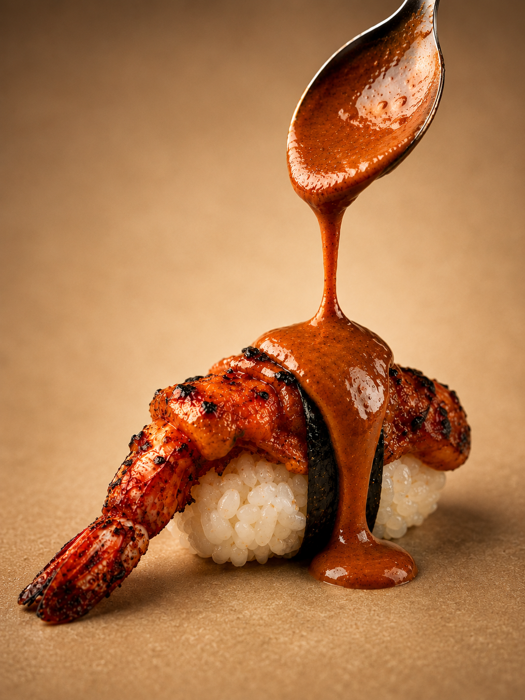
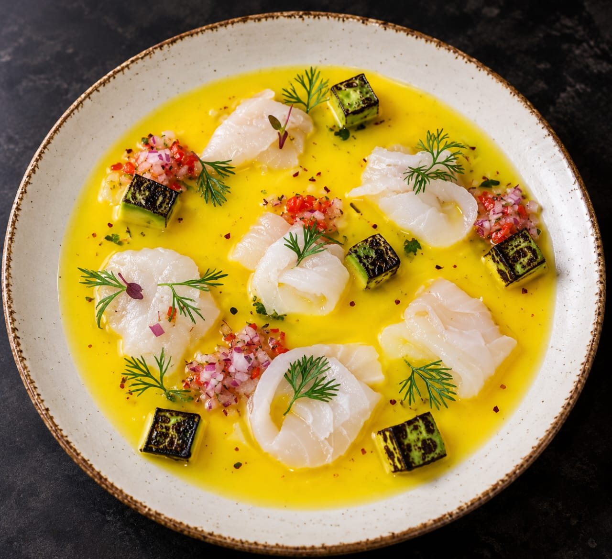
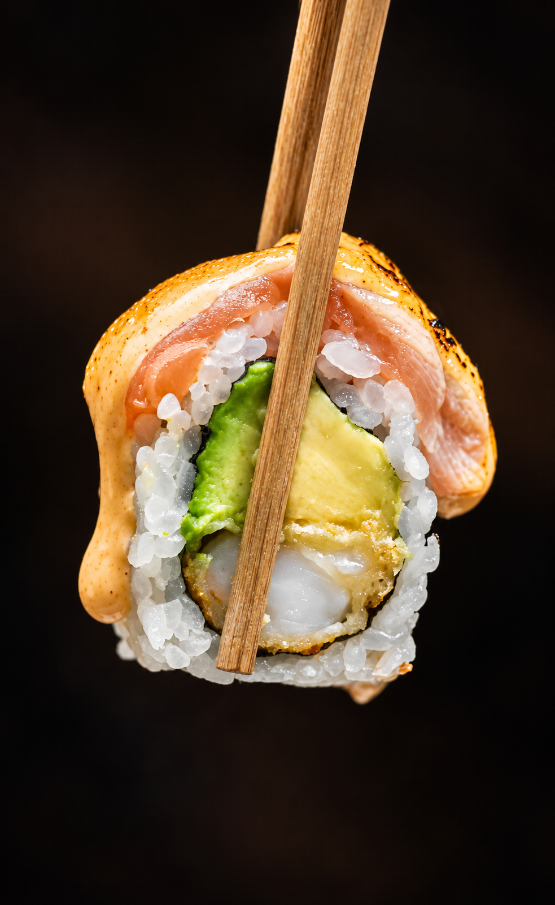
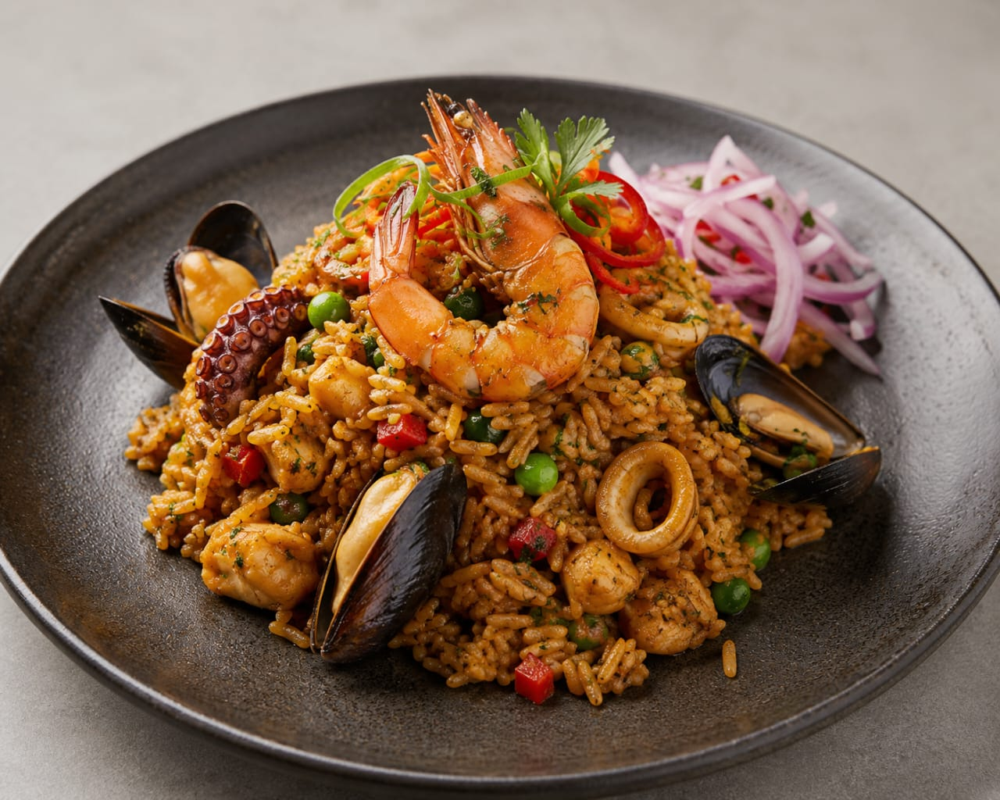
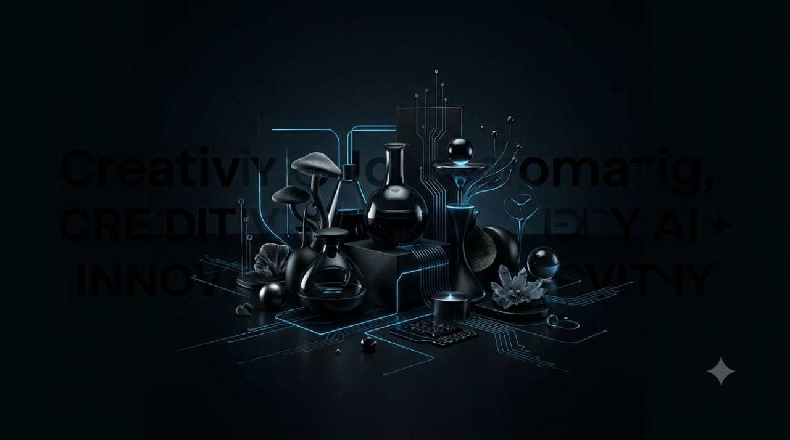
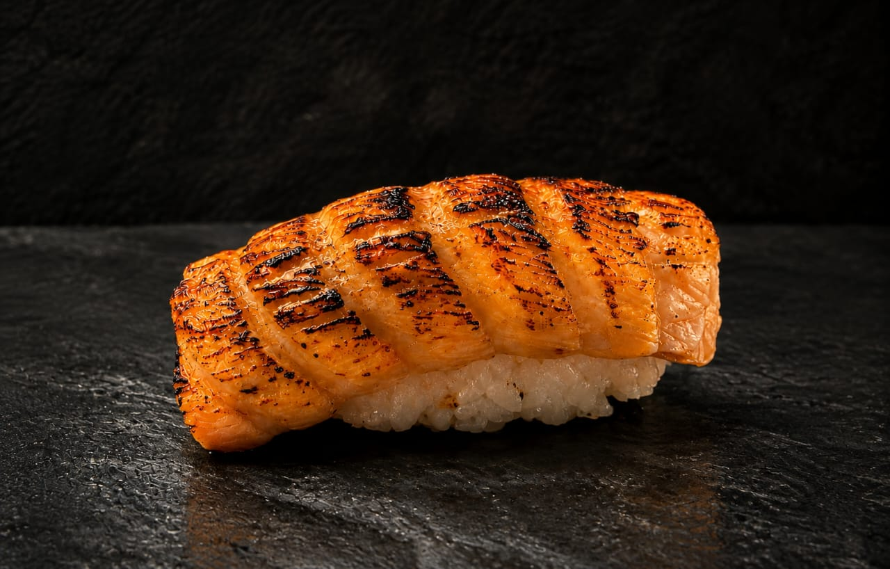
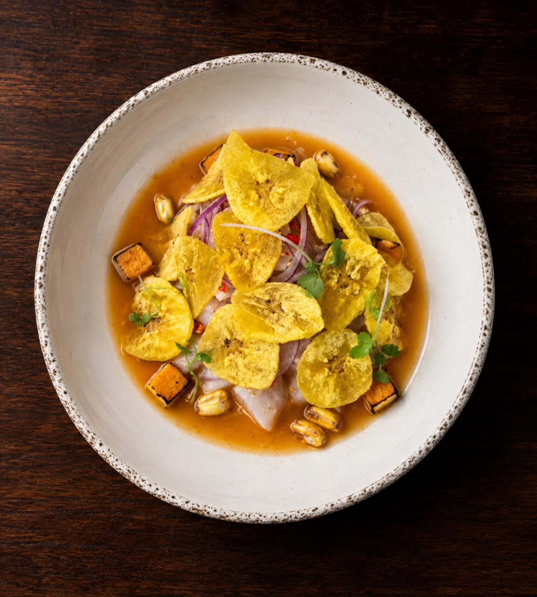
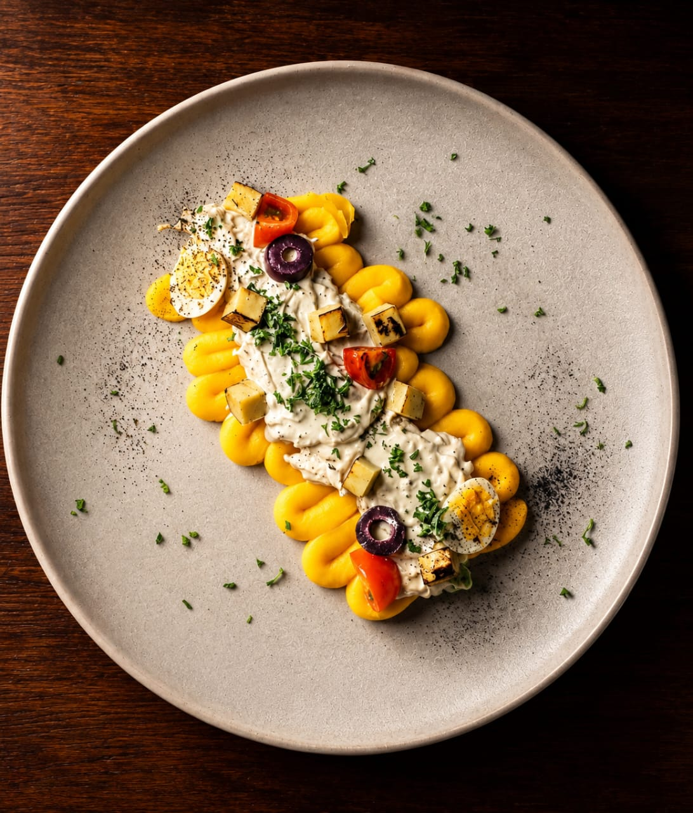

Gastronomía • Tecnología • Inteligencia Artificial





Soy Henry Díaz. Nací y crecí en Perú, donde la gastronomía se convirtió en una de las principales formas de expresar mi creatividad.
Mi formación en Le Cordon Bleu Perú y mi recorrido profesional me llevaron a desarrollar una cocina basada en la tradición peruana, la influencia nikkei y una visión contemporánea, donde busco equilibrio, técnica y personalidad.
Pero mi camino no termina en la gastronomía. Mi curiosidad me lleva hacia la tecnología, la inteligencia artificial y la creación de nuevos proyectos.
Hoy exploro cómo conectar estos mundos para transformar ideas en experiencias, herramientas y proyectos con propósito.
Mi trabajo es hacer que sea memorable.
Una experiencia gastronómica personalizada, creada para cada ocasión.
Sabores, técnica y creatividad inspirados en la cultura peruana y en sus influencias.
Una propuesta gastronómica diseñada para convertir cada encuentro en una experiencia.

Creo páginas web con identidad propia para personas, marcas y proyectos.
Exploro y desarrollo herramientas y agentes de inteligencia artificial para transformar ideas en soluciones útiles.
Desarrollo ideas, contenidos y experiencias que conectan creatividad, tecnología, imagen y gastronomía.
Creo y conecto ideas que normalmente no se encuentran.
Gastronomía • Tecnología • Inteligencia Artificial


Una selección de platos y creaciones que reflejan mi forma de entender la gastronomía: equilibrio, creatividad y atención a los detalles.
Explorando la inteligencia artificial para crear, desarrollar y transformar ideas.
Para colaborar o contratar mis servicios entre en contacto conmigo.
Henry Díaz · Chef peruano
Balneário Camboriú, Brasil